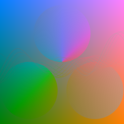

Blend Modes
If your browser supports the CSS property mix-blend-mode, you will see pairs of images below. The former images are the results of ColorBlendModes, and the latter images are the results with the CSS.
normal

ColorBlendModes.BlendModes.BlendNormal — ConstantBlendNormalThe destination color is always the source color.
Cdest = Csrcmultiply

ColorBlendModes.BlendModes.BlendMultiply — ConstantBlendMultiplyThe source color is multiplied by the backdrop color.
Cdest = Cb × Csrcscreen
ColorBlendModes.BlendModes.BlendScreen — ConstantBlendScreenThe complementary colors of the source and backdrop colors are multiplied, and the destination color is the complementary color of the multiplicated color.
Cdest = 1 - ((1 - Cb) × (1 - Csrc))overlay

ColorBlendModes.BlendModes.BlendOverlay — ConstantBlendOverlayThis mode uses the multiply or screen mode, depending on the backdrop color. The overlay mode is the inverse of the hard-light mode.
if Cb <= 0.5
Cdest = Csrc × 2Cb
else
Cdest = 1 - ((1 - Csrc) × (1 - 2Cb))
enddarken
ColorBlendModes.BlendModes.BlendDarken — ConstantBlendDarkenThe darker values of the backdrop color and the source color are selected.
Cdest = min(Cb, Csrc)lighten

ColorBlendModes.BlendModes.BlendLighten — ConstantBlendLightenThe lighter values of the backdrop color and the source color are selected.
Cdest = max(Cb, Csrc)color-dodge

ColorBlendModes.BlendModes.BlendColorDodge — ConstantBlendColorDodgeThe destination color is the result of dividing the backdrop color by the complementary color of the source color.
if Cb == 0
Cdest = 0
elseif Csrc == 1
Cdest = 1
else
Cdest = min(1, Cb / (1 - Csrc))
endcolor-burn

ColorBlendModes.BlendModes.BlendColorBurn — ConstantBlendColorBurnThe destination color is the result of dividing the complementary color of the backdrop color by the source color.
ColorBlendModes uses the definition of W3C drafts as shown below. Note that there is a variant, which returns 0 when Cb == 1 and Csrc == 0.
if Cb == 1
Cdest = 1
elseif Csrc == 0
Cdest = 0
else
Cdest = 1 - min(1, (1 - Cb) / Csrc)
endhard-light

ColorBlendModes.BlendModes.BlendHardLight — ConstantBlendHardLightThis mode uses the multiply or screen mode, depending on the source color. The overlay mode is the inverse of the overlay mode.
if Csrc <= 0.5
Cdest = Cb × 2Csrc
else
Cdest = 1 - ((1 - Cb) × (1 - 2Csrc))
endsoft-light

ColorBlendModes.BlendModes.BlendSoftLight — ConstantBlendSoftLightThe result is similar to the hard-light mode, but milder. This mode is also related to the overlay mode.
ColorBlendModes uses the definition of W3C drafts as shown below. Note that there are different definitions of the soft-light.
if Csrc <= 0.5
Cdest = Cb - (1 - 2Csrc) × Cb × (1 - Cb)
else
if Cb <= 0.25
D = ((4Cb - 3) × Cb + 1) × 4Cb
else
D = sqrt(Cb)
end
Cdest = Cb + (2Csrc - 1) × (D - Cb)
enddifference

ColorBlendModes.BlendModes.BlendDifference — ConstantBlendDifferenceThe destination values are the subtraction of the darker values from the lighter values of the backdrop and source colors.
Cdest = abs(Csrc - Cb)exclusion
ColorBlendModes.BlendModes.BlendExclusion — ConstantBlendExclusionThe result is similar to the difference mode, but milder.
Cdest = Cb + Csrc - 2Cb × Csrchue

ColorBlendModes.BlendModes.BlendHue — ConstantBlendHueThe result is a color with the hue of the source color and the saturation and luminosity of the backdrop color.
saturation

ColorBlendModes.BlendModes.BlendSaturation — ConstantBlendSaturationThe result is a color with the saturation of the source color and the hue and luminosity of the backdrop color.
color

ColorBlendModes.BlendModes.BlendColor — ConstantBlendColorThe result is a color with the hue and saturation of the source color and the luminosity of the backdrop color.
luminosity
ColorBlendModes.BlendModes.BlendLuminosity — ConstantBlendLuminosityThe result is a color with the luminosity of the source color and the hue and saturation of the backdrop color.